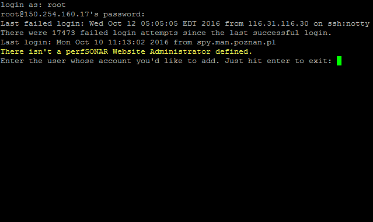
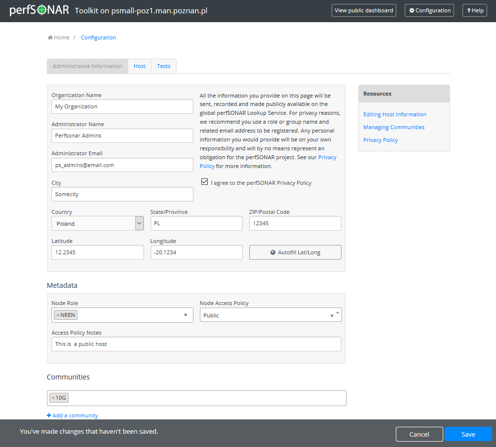

After installing the perfSONAR Toolkit, there are a few additional steps to be taken before you can begin using your new measurement host. Follow the sections on this page in order to complete the initial configuration and being performing network measurements with your perfSONAR Toolkit.
These steps apply for perfSONAR Toolkit ISO installation
The first time you login to your Toolkit you will be prompted to create a user that can perform administrative actions via the web interface.
Follow the prompts to complete the process as shown below:
Login with username root and the password you created during the installation process. You will get a prompt to create a new user:

At the prompt enter the username you’d like to create.
Note
The names psadmin and perfsonar are not allowed as they conflict with existing users and/or groups on the system.
You will be prompted to give the user a password and then to confirm it. Remember this password as it will be used to log-in to the web interface to perform administrative functions. Normal precautions should be taken to protect the root password as it can be used to make changes to the system. For example, safe password practices would recommend a password that contains a mixture of letters of different case, numbers, symbols, and a length greater than 8. It is also not recommend to re-use passwords on multiple machines, in the event of a system breach.
After entering your password the account is created. You will be prompted if you would like to create a privileged user and disable SSH access for root account. Note that for security reasons it is recommended to disable SSH root login. The default is to answer yes.
You will get a prompt to create a new user. Enter the username you’d like to create.
You will be prompted to give the user a password and then to confirm it. Remember this password as it will be used to log-in to via SSH to perform remote administrative functions.
After entering your password the account is created. You may now use this account to login via SSH and administer the host with sudo.
See also
If you had your host set up already, you need to create a web interface admin user and consider disabling ssh access. For more information on adding and managing users see Managing Users
You may access the web interface by typing http://<hostname> in your web browser.
Note
For best results it is recommended a browser other than Internet Explorer is used due to some javascript incompatibilities. All other major browsers have been shown to display the web interface without error.
You will be presented with a page like the following:
Administrative information needs to be populated first. You will be prompted for basic location and contact information. This information is needed so other perfSONAR users can more accurately find your node. To populate the information do the following:
Open http://<hostname> in a web browser where <hostname> is the name or address of your host.
Click on Edit (A) in the host information section of the main page or Configuration (B) button in the right-upper corner and login as the web administrator user created in the previous step
On the page that loads, enter the requested information in the provided fields. Click Save when you are done.
See also
For more information on updating administrative information see Updating Administrative Information
After completing this step, you should be able to access the GlobalServices directory page and see your host listed within 24 hours of making the change.
perfSONAR hosts are just like any other host and need to be actively managed to avoid being compromised. perfSONAR hosts run a number of common services, listen on numerous ports and may be outside your site’s normal firewall. No set of steps will make your host invincible, but below are some steps that can be taken to contribute toward protecting your host:
- An important aspect of security is to stay informed. Multiple system administrators from your site should be subscribed to the perfsonar security announcement list. This mailing list keeps users up-to-date on actions that need to be taken when critical security updates for both perfSONAR and third-party packages are released.
- Always follow best common security practices when it comes to creating user accounts and choosing passwords. Normal precautions should be taken to protect the root password as it can be used to make changes to the system. For example, safe password practices would recommend a password that contains a mixture of letters of different case, numbers, symbols, and a length greater than 8. It is also not recommend to re-use passwords on multiple machines, in the event of a system breach.
- If you have enabled SSH on the system, consider restricting access to specific subnets to the SSH port via IPTables, or implement a jump host that allows only logins from one location.
- Consider configuring rsyslog to send logs to other locations for aggregation and analysis
- If email has been enabled on the host, forward email from root to a central location
- If applicable, use a management network on a spare networking interface to further restrict the access profile for users and system data.
- If your site uses any form of automated management (CFEngine, Puppet, Forman, etc.), integrate the perfSONAR node into this procedure.
- If you run Nagios, add your perfSONAR host to your monitoring infrastructure. Consider running some of the nagios security plugins such as check_yum
- Automatic updates are enabled by default on all perfSONAR Toolkit hosts. In order to understand how to update your Toolkit and if automatic updates are right for your system, see Updating perfSONAR
- The perfSONAR Toolkit ships with a default iptables rule-set and intrusion detection system (IDS) software. In order to learn more about these components and how to do things like add custom firewall rules see Firewalls and Security Software
Those are just a few steps and there is always more than can be done. If you have access to system administrators leverage that resource and any other available. A little extra effort can prevent serious headaches later if your host falls victim to an attack.
You should now have a fully configured host regularly collecting data. A few things you may consider exploring:
Your regular tests record data that can be presented on graphs. To view the results on the toolkit provided graphs see the section Test Results Graphs